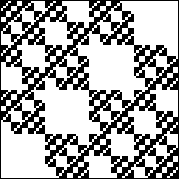

Here are two driven IFS. Is either determined by forbidden pairs?
|  |
Consider the left picture. We analyze the empty length 2 and length 3 addresses.
Now consider the right picture. We analyze the empty length 2 and length 3 addresses.
Return to Depth of History.